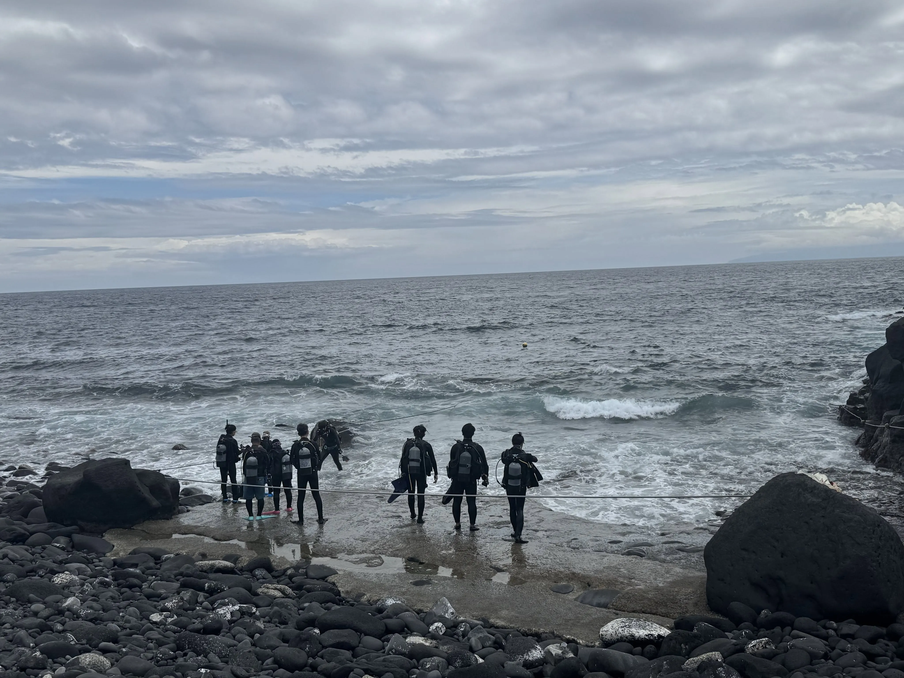

The road Orz passed by 2026 年 08 月
08 月 17 日 ( 月 )
Dive #200 インストラクターの仕事とは Part 2 〜ダイバーを支えるとは〜
threads で気になった投稿がありました。
初めて伊豆海洋公園でダイビングしたんだけど、波やうねりがヤバすぎた😂

ある threads の投稿より もともと外洋に面しててうねりの影響を受けやすいポイントらしいんだけど、台風の余波も重なってハンパなかった…ジェットコースターに乗ってる感覚🌊
海から出る時、波に飲まれないようロープを強く握ってたけど、一気に荒波に手が引き離されて、
体ごと洗濯機の中にいるみたいな状態になった時は本気で焦った💦（現地の方に助けられたおかげで無事でした🙇♂️）
そして片足のフィンと水中ライトが波に持ってかれました😇フィンだけ見つかって、ライトは土台ごと波にもぎ取られ行方不明…それだけ波の力が強すぎた😱他にもモノを海で無くしてるダイバーが多数！
でも「この荒波を経験しておけば、どのビーチの波も大丈夫」とのことなので良い経験になった！
めげずに２本目潜った時、ウミガメに出会えたから良しとしよう🐢✨（写真はとりそこねた）
今回の体験は、絶対に漫画に描きたい！✍️
>「この荒波を経験しておけば、どのビーチの波も大丈夫」とのことなので良い経験になった！
ではなくて、画像とこの投稿の記述を見る限り、少なくともぼくなら中止かポイント変更を検討する海況に見えます。
だってあそこは砂浜のビーチじゃなくてゴロタです。
もちろん IOP のあそこにはエントリー用にロープが貼られ、エキジット用にロープが貼られていることも知っています。ですが
> 海から出る時、波に飲まれないようロープを強く握ってたけど、一気に荒波に手が引き離されて、体ごと洗濯機の中にいるみたいな状態になった
だけではなく
> そして片足のフィンと水中ライトが波に持ってかれました😇フィンだけ見つかって、ライトは土台ごと波にもぎ取られ行方不明
とあります。
状況としては事故につながってもおかしくない状況だったわけで、それを間違っても「良い経験」と捉えてはいけないわけです。
IOP のあそこで画像のとおりなら、ダイバー自身が中止を検討できるようにならないとだめです。
インストラクターも
>「この荒波を経験しておけば、どのビーチの波も大丈夫」
なんて無責任なことを言ってはいけません。きちんと海でどう判断するのかを教えないと。
もちろん海況とこの投稿者のレベルを見て、事故にはならないって判断をしたのかもしれませんけど。
でもインストラクターなら、このような海況のときにどう判断するのか、この海況で、事故やインシデント、ヒヤリハットにつながるリスクをどう評価し、どのような条件ならダイビングが成立すると判断するのか、などを教えることも、インストラクターの重要な仕事だと思います。
少なくともぼくがツアーに参加してきたショップの NAUI インストラクターは、海況とその場所特有の条件、そして自分自身の現在の能力を比較して、ダイビングを行うのか中止するのか、更には水中でどんなときに行動を止めて、水中の状態を観察して、判断して、それから行動を再開するのか、それとも撤退するのか、といったことをツアーの中で教え続けてくれていました。
ぼくにはこの投稿では投稿者が悪い方向に経験バイアスを増強してしまったように見えます。
ぼくがこのときの引率インストラクターに限らず全てのインストラクターに問いたいのは、このゲストがそのような判断をできるようになるための手助けをしていますか？
海況やその場所の特徴を総合的に考えて、Go、Stop をゲスト自身が判断できるように育てていますか？
今一度インストラクターの役割は何なのか、改めて考えたいとは思いませんか？
- Category :
- #Records of Orz's Road
- #ダイビング
- #スクーバダイビング
- #インストラクターの役割
- #ダイバーを支えるとは
- #より安全なダイバーになってもらうこと